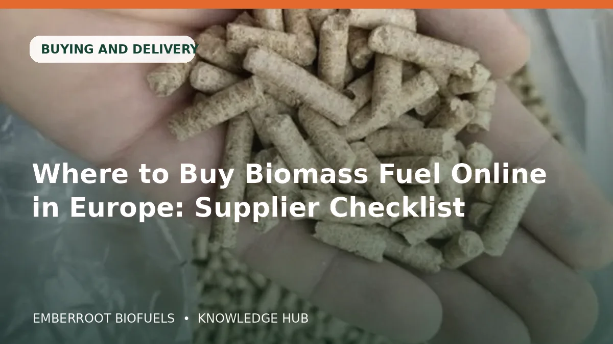

27KWIZakup i dostawa
Gdzie kupić biomasę online w Europie: kontrola dostawcy
Praktyczny poradnik o zakup i dostawa: specyfikacja, wydajność, magazynowanie i kontrola zakupu dla „Gdzie kupić biomasę online w Europie: kontrola dostawcy”.
Czytaj artykuł